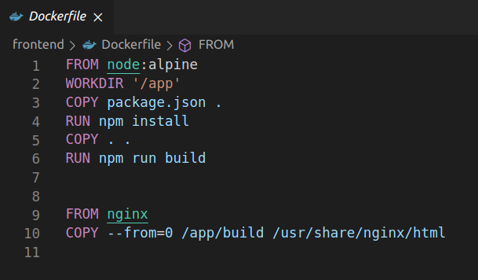
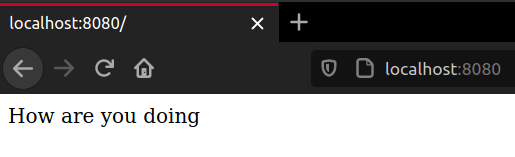
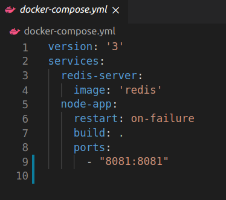
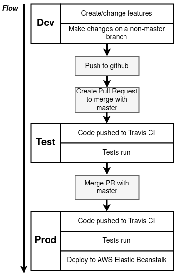
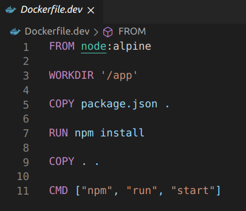
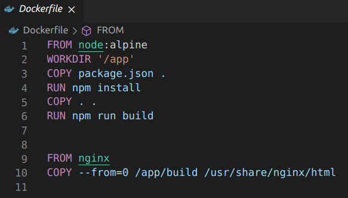
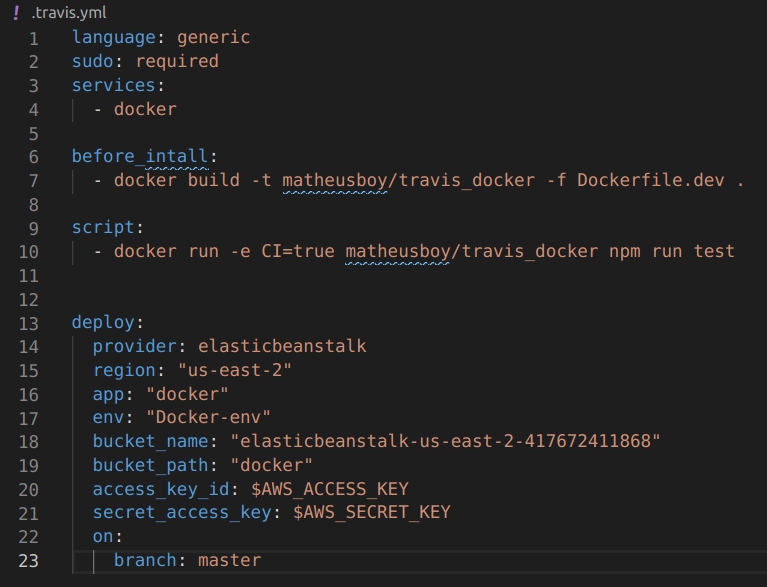

Course Sections
Here we present an overview of what each section talks about.
Section 1
What is Docker
Introduction to Docker and basics concepts behind the platform.
Docker Installation
A guide on how to install Docker on most OS out there. Small instructions for Linux in the course, had to resort to the official guide for Ubuntu installations.
Basic use of Docker Client
Using commands to check if the installation was correctly done.
docker version
docker run hello-world
Section 2
Containers
What are containers, how to run them and what running a container truly is.
Basic Commands
Introduction to useful commands.
docker ps
docker run
docker system
docker kill
docker start
docker create
docker stop
docker logs
docker exec
...
Isolated Containers
Showing that a container is virtually isolated from the running machine and other containers running along side it by default.
Section 3
Creating a Container Image
Creating a container image using the command build.
docker build
docker build -t matheusboy/image-tag
Dockerfile
What is a Dockerfile, how it works and how to make one.

Base Images
Using base images to build Docker images.
The Build Process
How the building process of an image takes place.
Manual Image Generation
using the commit command to manually generate an image.
docker commit container-id
Section 4
JavaScript App
Writing a simple JS App to work along the section.

Application Container
Building a container for the application from a Dockerfile.
Debugging
Revising common mistakes made during the project creation.
Port Mapping
How to port map a container.
docker run -p HostPort:ContainerPort <image-id>
Section 5
Visits Counter
Another project to be used along this section: a simple webpage with a visits counter.

Docker Compose
What is Docker Compose and how to use it. Using Docker Compose to run multiple containers.
Setting up a Docker Compose YAML file and basic commands.

docker-compose up
docker-compose down
docker-compose build
docker-compose create
...
Section 6
Development Workflow
How a development workflow works and using it to implementing a React App project.

Creating a Dockerfile.dev
To implement the project in the development stage it's used a Dockerfile.dev to differ from the Dockerfile that's going to be used in the production stage.

Docker Volumes
How to use volumes in a container. More info here.
docker volume
docker run -v $(pwd):<volumedir> <image-id>
Docker Compose Services
Setting up different services with Docker Compose.
Multi-step Docker Builds
Setting up a production stage Dockerfile with multiple building steps.

Section 7
Using Travis and AWS
What is Travis and AWS and how to set them up.
Travis YAML
Creating a basic Travis YAMl file and integrating it to GitHub so pull requests can be automatically tested and deployed into AWS.

Section 8
React App Project
Entire section was about writing JavaScript code for a Fibonacci Calculator using React. It will be a multi-container project.
Section 9
Applying Docker Knowledge - Development
Up to this point the course have presented a great deal of information and most of what have been seen in this section was already seen in past sections. The difference was on how what we have seen can be used to implement projects, in this case the Fibonacci Calculator. Using Docker Compose to state various services, multi-building process and containers configurations.
Section 10
Applying Docker Knowledge - Production
Much like Section 9, in this section our knowledge acquired was applied in order to make the production stage files.